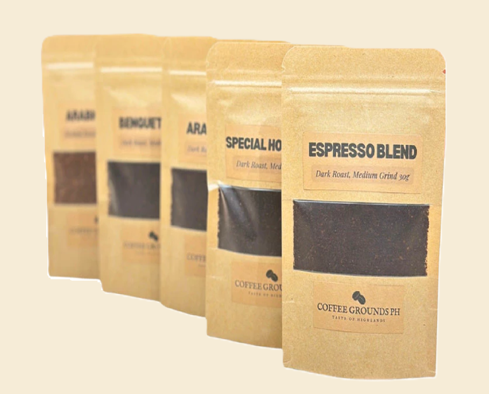

At Coffe Co, we believe that every cup of coffee tells a story, and it all begins with the beans.
Our journey to sourcing the finest coffee starts at the source—the lush, mountainous regions where coffee is grown.
We partner with small-scale farmers from renowned coffee-producing countries such as Ethiopia, Colombia, and Costa Rica.
Our commitment to direct trade ensures that these farmers receive fair compensation for their hard work, allowing them to
invest in their families and communities. By building strong relationships with our growers, we’re able to handpick beans that
not only taste exceptional but also support sustainable practices.
Once the coffee cherries are harvested, they undergo a meticulous processing method, whether washed, natural, or honey-processed.
Each technique highlights unique flavor profiles, from bright and fruity to rich and chocolatey. After processing, the beans are carefully
sorted and graded, ensuring only the best make it to our roasters.
At Coffee Co, we roast our beans in small batches to bring out their distinct flavors. Our expert roasters monitor each batch closely,
adjusting time and temperature to achieve the ideal roast level. This attention to detail allows us to unlock the unique characteristics
of each origin, resulting in a cup that reflects the essence of its land.
We invite you to explore our carefully curated selection of coffee beans, each with its own story. From the first sip to the last drop,
we hope you’ll appreciate the rich heritage and craftsmanship behind every cup. At Coffee Co, every bean has a journey, and we’re
excited to share it with you.